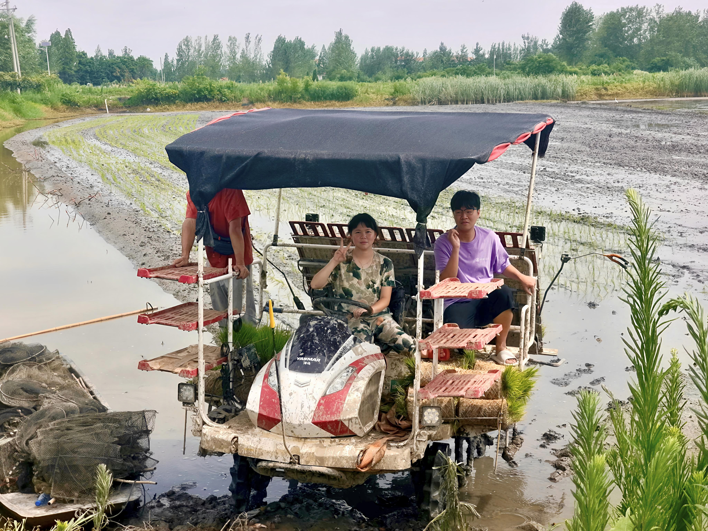

6,300亩生态稻田
700万年产稻米(斤)
15万年游客量
3推荐路线
特色体验
🏛
文化研学
博物馆·秦简·烈士
🌾
稻虾共作
一田双收
🎣
休闲游玩
生态园·游乐园
📋
特产溯源
扫码查来源
💬
游客反馈
告诉我们
热门推荐

文化研学
博物馆 · 睡虎地秦简
云梦县博物馆、龚华铭烈士纪念广场。

稻虾产业
双水双绿 · 一田双收
6300亩稻虾共作、钓虾体验。

休闲游玩
生态园 · 游乐园 · 美食
五湖四海生态园、伍子游乐园。

特产溯源
一田一码 · 虾稻米
扫码查看虾稻米产地、种养方式。

游客反馈
问卷 · 建议 · 分享
告诉我们你的游玩体验，帮伍湖变得更好。
休闲一刻
🦐
钓虾达人
手速挑战
30秒抓龙虾，连击加分！
🌾
插秧能手
反应挑战
看准位置快速种下秧苗！
🧠
伍湖知多少
知识问答
8道题测试你对伍湖的了解。
文化研学
云梦县博物馆 · 睡虎地秦简 · 龚华铭烈士纪念广场
📍 从伍湖村出发约30分钟车程
伍湖周边好去处
2024年11月习近平总书记考察云梦县博物馆，让这座宝藏博物馆火出了圈。从伍湖村驱车约半小时就能到达，看看两千年前的秦简，再去龚华铭烈士纪念广场缅怀先烈，一日游安排得明明白白。
文化故事
稻虾产业
稻虾共作 · 双水双绿 · 梦辰泽农业
🌱 6300亩生态种养 · 一田双收 · 绿色循环
6,300亩生态田
700万年产稻米(斤)
252万年产龙虾(斤)
15万年游客量
产业故事
特产溯源
扫码查看伍湖虾稻米 · 产地 · 种养全程
→
休闲游玩
五湖四海生态园 · 伍子游乐园 · 水上餐厅
🗺 3条推荐路线 · 年接待约15万人次
推荐路线
好玩推荐
体验项目
🌾
稻虾科普
了解生态种养模式
🏷
特产溯源
扫码知来源
🎢
伍子游乐园
儿童滑梯·风车
🍽
水上餐厅
农家菜品尝
🏡
特色民宿
住下来慢慢玩
📱